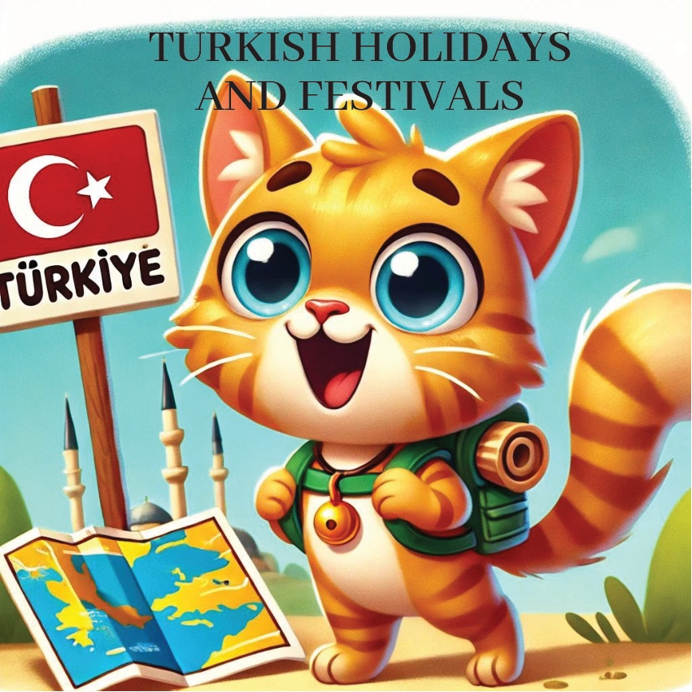
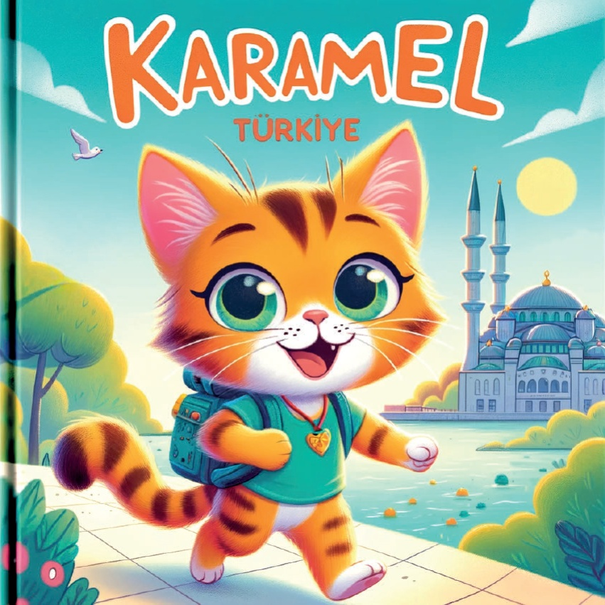
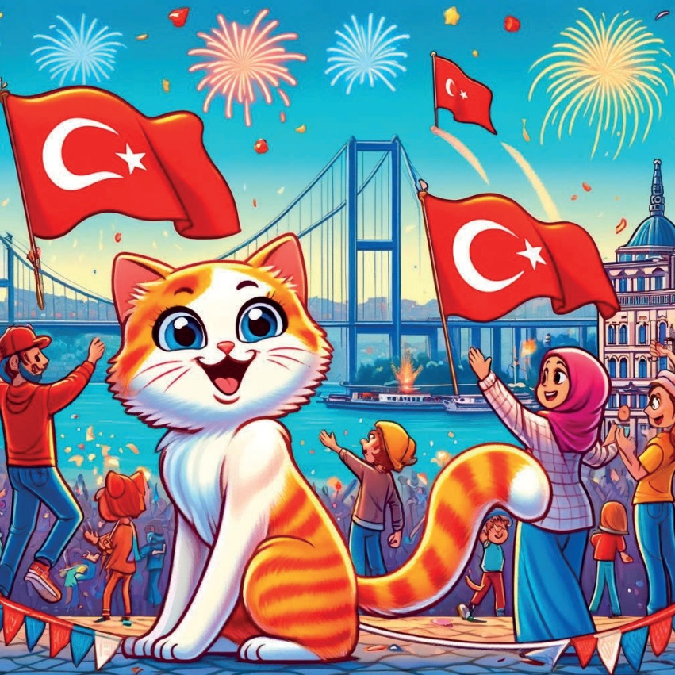
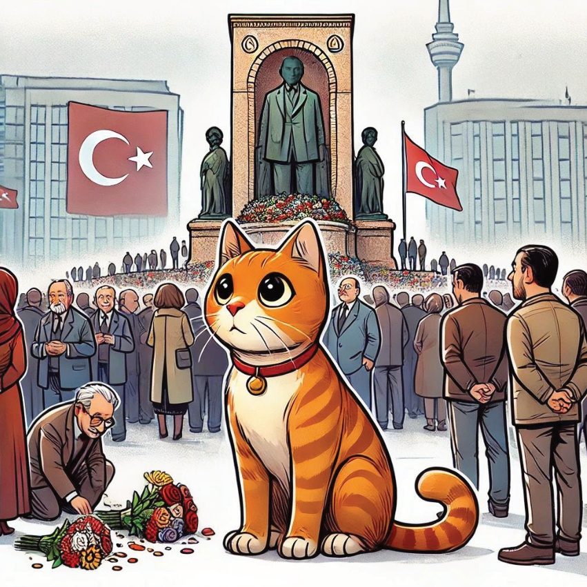
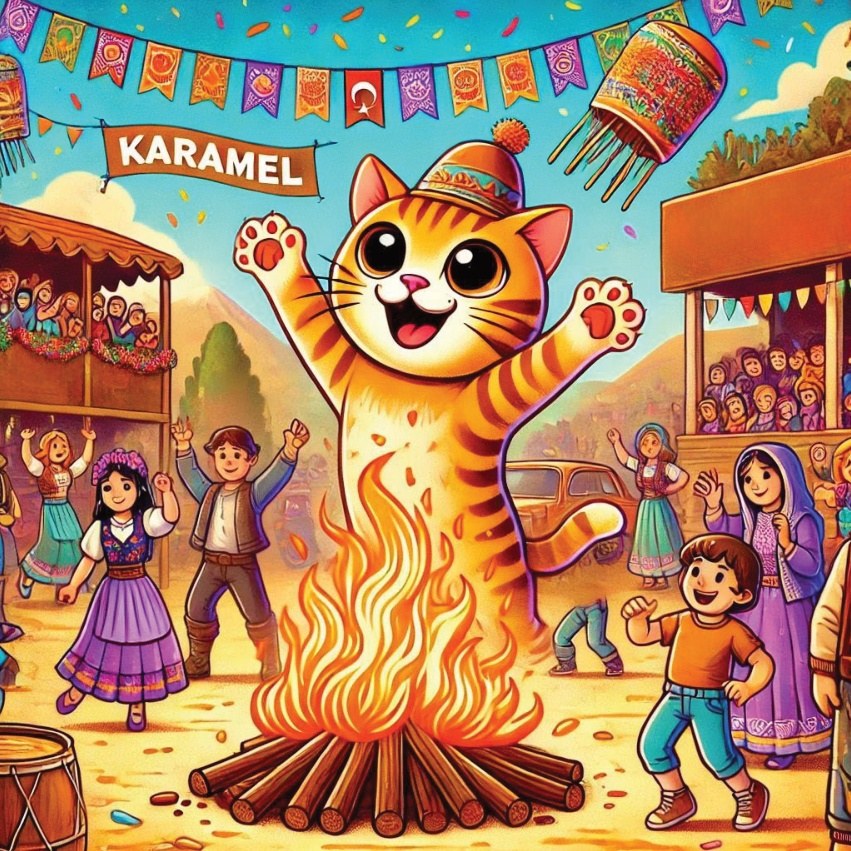
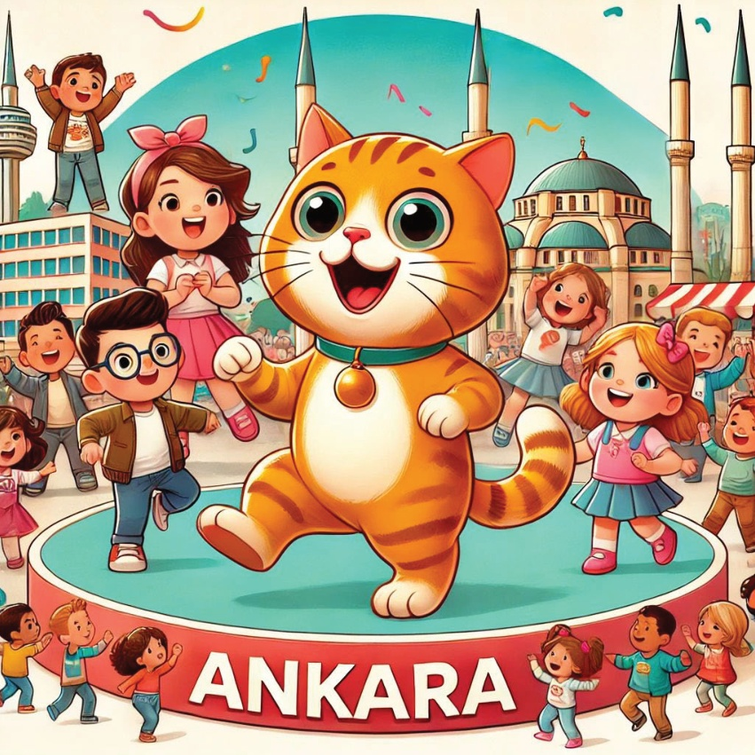
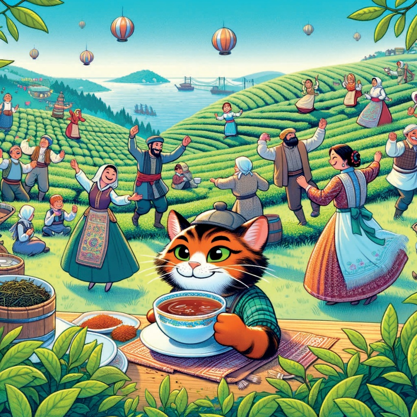
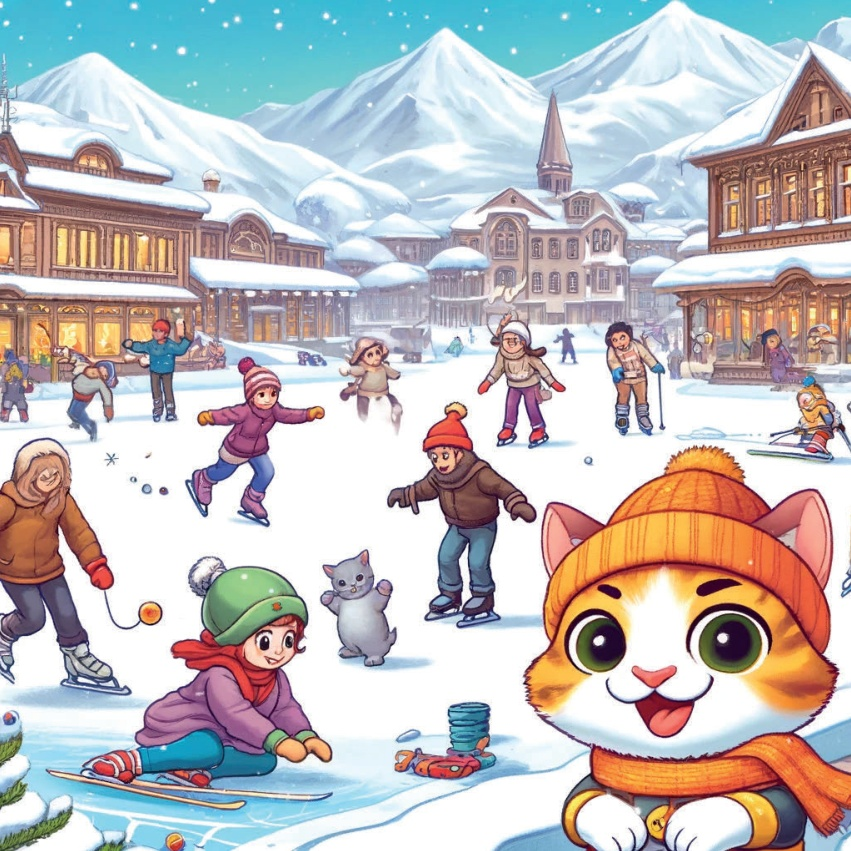
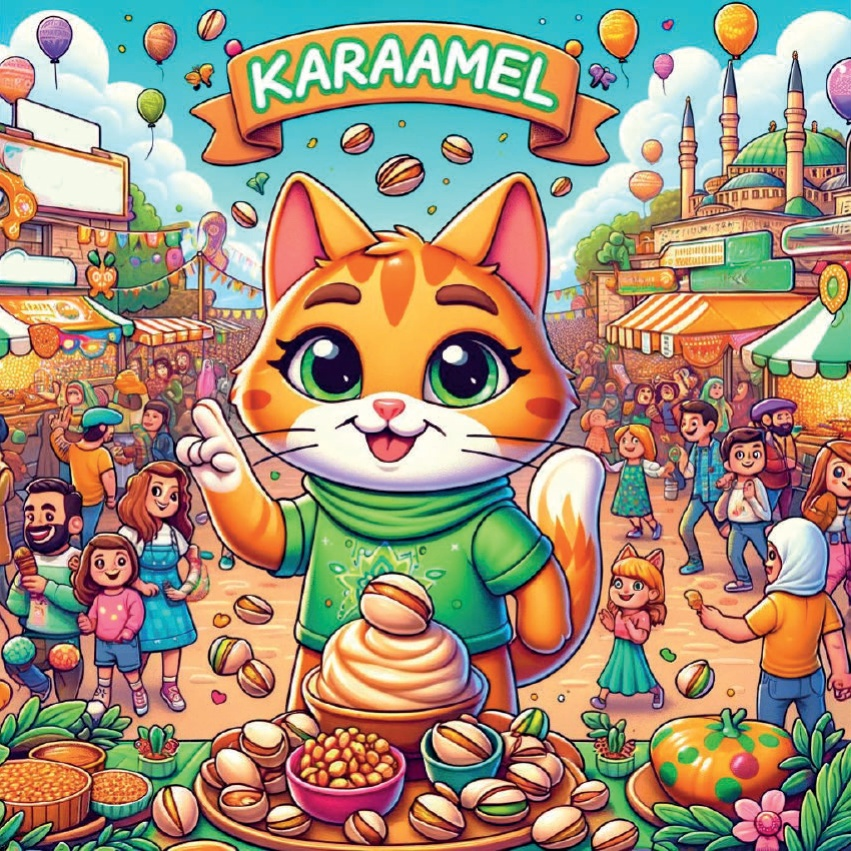
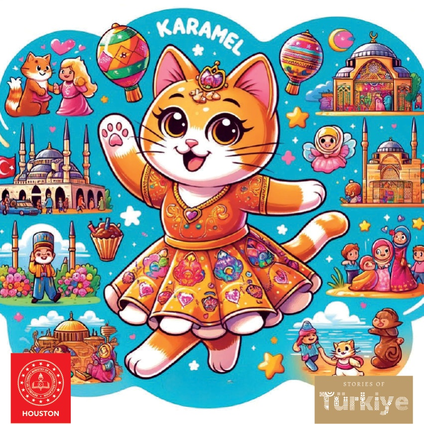

1

2

3
Kiedyś, w pewnym miejscu, mieszkał ciekawski kocur o imieniu Karamel, który uwielbiał odkrywać i świętować. Karamel wyruszył w podróż przez Türkiye, aby poznać wyjątkowe święta i festiwale w każdym regionie.
4

5
Marmara Bölgesi - İstanbul: Republica Zile'nin ilk durağı İstanbul oldu, burada Republica Zile kutlamalarına katıldı. Caddeler bayraklar sallayan, şarkılar söyleyen ve atıştırmalıkları izleyen insanlarla doluydu.
6

7
Regiunea Egeus - İzmir: Ziua comemorării lui Atatürk.
Karamel se duse apoi în İzmir pentru a vedea Ziua comemorării lui Atatürk. Oamenii se adunară în jurul monumentului lui Atatürk pentru a pune flori și a-l aminti pe fondatorul Turciei moderne.
8

9
Mediterraneanul – Antalya: Hıdırellez.
În Antalya, Karamel a participat la festivitățile de Hıdırellez. Oamenii au dansat în jurul focarelor, au sărit peste flăcări și au sărbătorit venirea primăverii.
10

11
Ankara, Anadolu Tengah – Ziua Copilului.
În Ankara, Karamel a participat la festivitățile de Ziua Copilului. Orașul era plin de copii care dansau, cântau și se distrau cu diferite activități.
12

13
Karamele, festivalul ceaiului, a călătorit în regiunea Mării Negre, la Rize, pentru Festivalul Ceaiului. Oamenii au sărbătorit recolta de ceai cu muzică, dans și degustări de ceai.
14

15
Karamel a participat la Festivalul de Iarnă în Erzurum, în regiunea Anatolia de Est. Oamenii s-au distrat patinând pe gheață, schiind și luptându-se cu zăpadă în munții acoperiți de zăpadă.
16

17
Gaziantep, Gaziantep, Güneydoğu Anadolu'da!.
Pistachio Festivali Karamel, fındık festivalinin son durağı olarak Gaziantep'e geldi. Şehir, çok lezzetli fındık tatlılarıyla, müzikle ve dansla doluydu.
18

19
Cu inima plină de bucurie și burtica plină de gustări, Karamel a realizat că adevăratele comori ale Turciei erau cultura sa bogată și oamenii minunați pe care i-a întâlnit pe drum. S-a întors acasă visând la următoarea ei aventură.
20
21

22